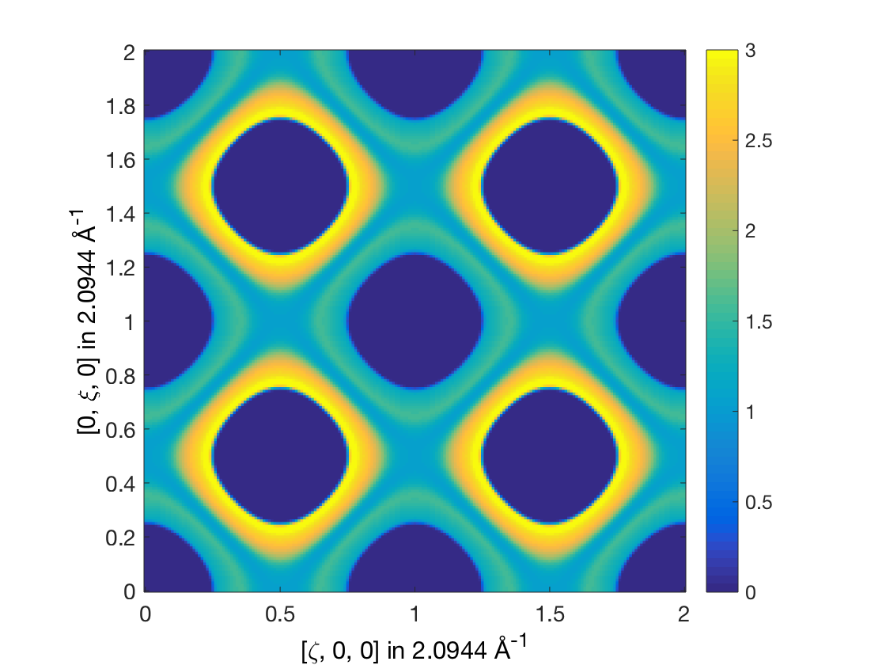

How to produce constant energy cut of spin wave spectrum?
This example shows how to calculate the spin wave spectrum of the square lattice Heisenberg antiferromagnet and to produce a constant energy cut of the spectrum.
Contents
Crystal & magnetic structure
Using sw_model, the crystal and magnetic structure are readily available. Using the 'squareAF' option, a square lattice Heisenberg Antiferromagnet with S = 1 and J = 1 is created.
sq = sw_model('squareAF',1,0);
plot(sq)
swplot.zoom(2)

Spin wave
We need to define a grid in reciprocal space, here we use the (Qh, Qk, 0) square lattice plane by calling ndgrid() function.
nQ = 201;
nE = 501;
Qhv = linspace(0,2,nQ);
Qkv = linspace(0,2,nQ);
Qlv = 0;
[Qh, Qk, Ql] = ndgrid(Qhv,Qkv,Qlv);
% Create a list of Q point, with dimensions of [3 nQ^2].
Q = [Qh(:) Qk(:) Ql(:)]';
Spin wave spectrum
We calculates the spin wave spectrum at the list of Q points, bin the diagonal of the spin-spin correlation function (Sxx+Syy+Szz) in energy and convolute with a finite instrumental resolution.
spec = sq.spinwave(Q); Ev = linspace(0,5,nE); spec = sw_egrid(spec,'component','Sxx+Syy+Szz','Evect',Ev); spec = sw_instrument(spec,'dE',0.1);
Creat the Q map
The calculated intensity map is stored in spec.swConv, we reshape it into a 3D matrix using Matlab commands.
spec3D = reshape(spec.swConv,nE-1,nQ,nQ);
Plotting E=const cut
A constant energy cut takes the (Eidx,:,:) elements of the matrix and plots it using the Matlab function imagesc(). We also integrate in energy the same way Horace does by taking the average of the points and rescaling with the energy bin size.
Ecut = [3.5 4.0]; %meV Eidx = find(Ev>Ecut(1) & Ev<Ecut(2)); figure; cut1 = squeeze(sum(spec3D(Eidx,:,:),1))/numel(Eidx)/(Ev(2)-Ev(1)); imagesc(Qhv,Qkv,cut1); set(gca,'YDir','normal') xlabel('(H 0 0) (r.l.u.)') ylabel('(0 K 0) (r.l.u.)') title('Spin wave spectrum at E = 3 meV, square lattice Heisenberg AF') caxis([0 3]) colorbar

Constant energy cut using Horace
We can do the same cut much easyer using Horace (http://horace.isis.rl.ac.uk). Assuming that Horace is installed and initialized we can do the same constant energy cut with just three steps. First we create an empty d3d object that defines the (h,k,0) plane with ranges in momentum and energy. Second we call Horace to fill up the empty d3d object with the simulated spin wave data and finally we plot a constant energy cut.
d3dobj = d3d(sq.abc,[1 0 0 0],[0,0.01,2],[0 1 0 0],[0,0.01,2],[0 0 0 1],[0,0.01,5]);
d3dobj = disp2sqw_eval(d3dobj,@sq.horace,{'component','Sxx+Syy+Szz'},0.1);
plot(cut(d3dobj,[],[],[3.5 4]));
colorslider('delete')
title('')
caxis([0 3])
colorbar
-------------------------------------------------------------------------------- Taking cut from dnd object...
Written by Sandor Toth 06-Jun-2014, 06-Feb-2017